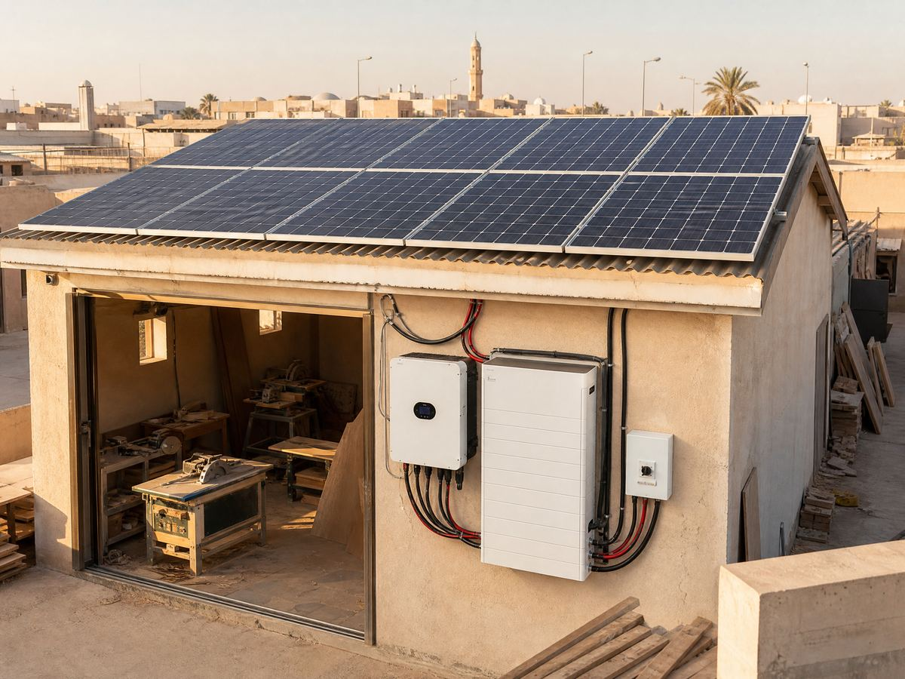

🔧 System at a glance
This is a hybrid system built for inductive motor loads: the roof array feeds the shop during the day, the battery absorbs motor startup surges and covers power cuts, and the grid stays connected as backup.
| Component | Specification |
|---|---|
| Solar panels | 12 × 500 W monocrystalline = 6,000 Wp (6.0 kWp) |
| Inverter | 6 kW hybrid inverter (high surge capacity, motor-friendly) |
| Battery | 9.6 kWh LiFePO4 lithium (2 × 4.8 kWh units) |
| Loads | 2.2 kW table saw, 1.5 kW air compressor, 1.5 kW dust extractor, 3-phase converted to single-phase via inverter, LED lighting |
| Motor startup | Saw inrush ~10–13 kW for 0.3–0.5 s — battery + inverter surge rating covers it |
| Mounting & protection | Rooftop steel rails, south-facing ~25°, DC isolator, breakers, surge protection, earthing |
Size your own array with the panel calculator, check your motor loads with the watts-to-amps calculator and size the battery with the battery calculator.
💡 Estimated energy output
With about 5.5 peak sun hours in northern Jordan and a realistic performance ratio of ~0.78, a 6.0 kWp array gives roughly:
| Component | Specification |
|---|---|
| Per day (summer) | ~25–26 kWh/day |
| Per day (winter) | ~18–20 kWh/day |
| Workshop demand | ~20–24 kWh/day (saw, compressor, extractor, lighting) |
💰 Cost breakdown (Jordan, approximate)
Hybrid with battery — rough planning figures for Jordan (prices move, always get local quotes):
| Component | Specification |
|---|---|
| 12 × 500 W panels | ~1,300 – 1,950 |
| 6 kW hybrid inverter | ~850 – 1,300 |
| 9.6 kWh LiFePO4 battery (2 units) | ~1,200 – 1,800 |
| Roof mounts, cable, protection | ~450 – 650 |
| Total (hybrid with battery) | ~3,800 – 5,700 |
| Diesel generator equivalent (purchase + 1 year fuel) | ~200 – 350/month fuel and maintenance |
📈 Savings & payback
In the real example above, a carpentry shop in Mafraq was paying roughly 120–180 JD per month on the commercial tariff plus 80–120 JD per month for the diesel generator that ran during summer cuts — power cuts mid-cut spoiled wood and delayed orders. The 6 kW hybrid system now covers the saw, compressor and extractor through the working day and rides out cuts, saving an estimated 180–280 JD per month, so the system pays back in about 1.5–2.5 years — after which workshop energy is essentially free for the panels' 25+ year life.
Your workshop may differ — check your own motor loads with the watts-to-amps calculator, estimate savings in the solar bill savings calculator and run the payback in the ROI calculator, or design the whole system at once in the system report builder.
🛠️ Field note
We built this system for a carpentry shop in Mafraq, Jordan: 12 panels on a flat rooftop facing south, a 6 kW hybrid inverter and two 4.8 kWh lithium batteries beside the workshop door. The hardest part was not the kWh math but the inrush — the old 3 kW on-grid inverter we tried first tripped every time the table saw bit into hardwood; the 6 kW hybrid with battery absorbs the 0.3-second startup surge without flinching. In summer the compressor used to run on a diesel generator for three hours a day during scheduled cuts; now it runs on battery with zero fuel cost, and the owner stopped buying 20L diesel jerry cans altogether — that alone was 90 JD a month saved.
🧰 Design your own system
- Watts to amps calculator — convert motor loads to circuit current.
- Battery calculator — size backup storage.
- Solar panel calculator — how many panels for your usage.
- ROI calculator — payback in your currency.
- Full system report — design the whole system in one page.
Motor loads behave differently from lights and fridges — see the guide on grid-tied vs off-grid vs hybrid and the battery bank design guide. For your country's tariffs and payback, visit Solar by Country.
❓ Frequently asked questions
How big of a solar system does a workshop with motors need?
Most small workshops with a table saw, compressor and dust extractor run well on 5–7 kWp. The trick is not just total kWh but startup (inrush) current — motors pull 4–6 times their running current for a moment, so the inverter must be sized for the peaks.
Can solar really run a table saw and air compressor?
Yes — once the motor is spinning it only draws its running current. The hybrid inverter in this example is 6 kW, which covers a 2.2 kW saw plus a 1.5 kW compressor even when they overlap, and the battery smooths the short peaks.
How much does a 6kW workshop solar system cost in Jordan?
Roughly 3,500–5,200 JD for a hybrid system with battery in Jordan, including panels, 6 kW hybrid inverter, 9.6 kWh lithium battery, mounting and protection. A diesel generator that does similar duty costs 200–350 JD every month in fuel and maintenance.
Why hybrid and not just grid-tied for a workshop?
A workshop's grid tariff is the expensive commercial rate, cuts hit machines mid-job (spoiling work), and motors trip cheap on-grid inverters with their startup surge. A hybrid inverter with battery handles the surges and keeps working through cuts.
Note: all figures are approximate and for planning only. Production depends on your sun hours, shading and roof orientation; prices and tariffs vary and change over time. Always confirm with local installers and your electricity provider.